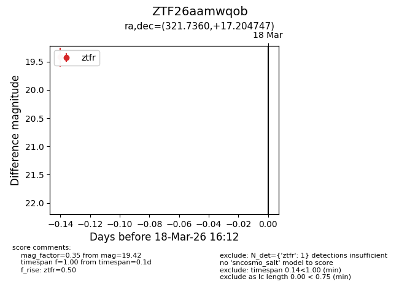
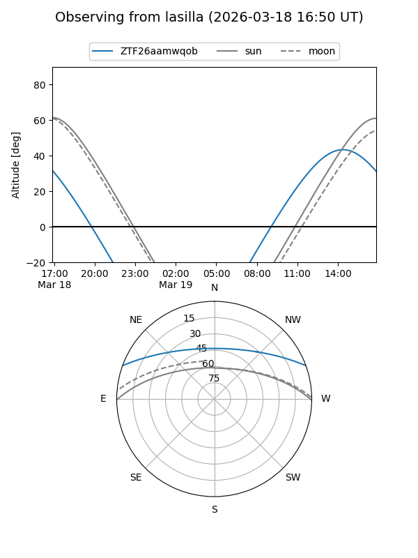
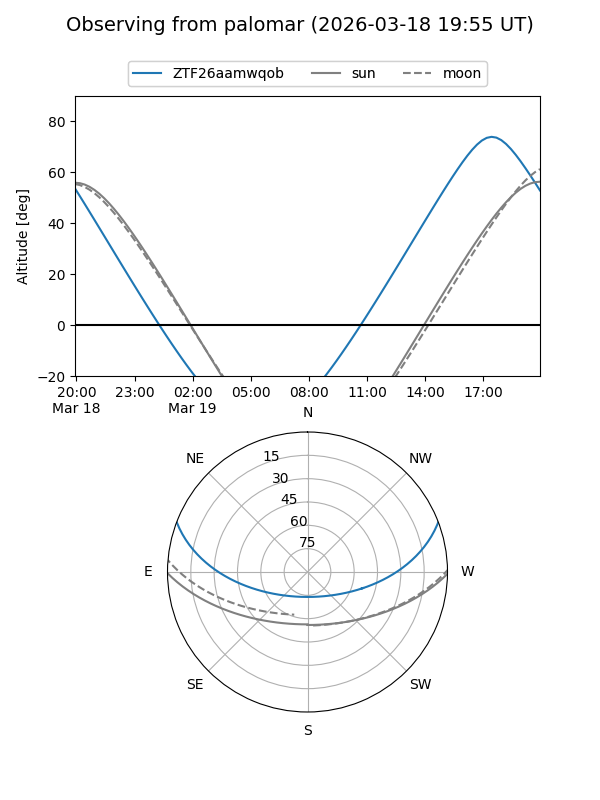

ZTF26aamwqob
Target ZTF26aamwqob at 2026-03-18 16:14
Aliases and brokers:
FINK: link
Lasair: link
ALeRCE: link
alt names
ZTF26aamwqob (ztf,fink_ztf)
Coordinates:
equatorial (ra, dec) = 321.7360,+17.20475
equatorial (HMS+DMS) = 21:26:56.63,+17:12:17.09
galactic (l, b) = (68.7465,-23.49858)
Flags:
Photometry:
last ztfr=19.42
1 ztfr detections
Lightcurve

Visibility


Additional plots